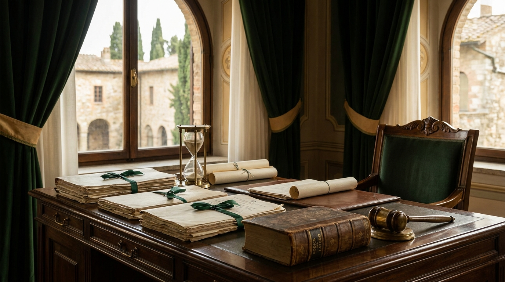

Ritardi sistematici e perdita del cliente: quando il licenziamento regge
I ritardi reiterati di un dipendente, quando provocano un danno concreto come la perdita di un cliente, possono giustificare il licenziamento per giusta causa. È quanto emerge da un orientamento della Cassazione che valorizza non solo la frequenza degli inadempimenti, ma il loro impatto effettivo sull'organizzazione e sui rapporti commerciali dell'azienda. Un tema che tocca diligenza, proporzionalità e onere della prova.

Il caso
La vicenda riguarda un dipendente sanzionato con il licenziamento per giusta causa a fronte di ritardi sistematici nello svolgimento della prestazione. L'elemento decisivo non è stato il mero accumulo di episodi, ma la conseguenza che ne è derivata: il danno all'azienda, fino alla perdita di un cliente.
Una precisazione doverosa di metodo: non avendo a disposizione gli estremi identificativi della decisione (sezione, numero e anno), questo contributo non commenta una singola pronuncia, ma ricostruisce l'orientamento di legittimità sul punto. Chi intenda verificare il precedente specifico dovrà reperirne gli estremi presso le banche dati ufficiali.
Inquadramento normativo
Il perno è l'art. 2119 del codice civile, che consente il recesso senza preavviso quando si verifica una causa "che non consenta la prosecuzione, anche provvisoria, del rapporto". La giusta causa, in altri termini, presuppone un fatto talmente grave da spezzare il vincolo fiduciario tra le parti.
A monte opera l'art. 2104 c.c., che impone al lavoratore la diligenza richiesta dalla natura della prestazione. Il rispetto dei tempi rientra a pieno titolo in questo obbligo: la puntualità non è una formalità, ma un elemento funzionale all'organizzazione produttiva.
Il giudizio sulla sanzione, però, non è mai automatico. L'art. 2106 c.c. impone che la misura disciplinare sia proporzionata alla gravità dell'infrazione. È qui che la valutazione si fa concreta: non basta contare i ritardi, occorre pesarne le conseguenze.
Il quid novi: il danno concreto come elemento di valutazione
L'apporto specifico di questo filone sta nel rilievo probatorio del danno effettivo. La reiterazione, da sola, integra un inadempimento; ma è la dimostrazione di una conseguenza tangibile — la perdita di un cliente, un pregiudizio economico misurabile — a spostare l'ago del giudizio di proporzionalità verso la sanzione espulsiva.
In questa prospettiva, il danno concreto non è un mero corollario: diventa la prova che il comportamento ha intaccato l'interesse aziendale al punto da rendere la prosecuzione del rapporto non più esigibile. La distinzione tra semplice reiterazione e reiterazione produttiva di danno è il vero perno argomentativo.
Implicazioni pratiche
Per il datore di lavoro, la decisione conferma che il licenziamento per giusta causa fondato su ritardi regge meglio in giudizio se sorretto da elementi documentali: non solo l'elenco degli episodi, ma la prova del nesso tra l'inadempimento e il pregiudizio subìto.
Per il lavoratore, il quadro segnala che i ritardi ripetuti non restano confinati alla sfera della tolleranza organizzativa quando incidono sui rapporti commerciali. La gravità si misura anche sull'effetto esterno della condotta.
Va ricordato che il principio non introduce alcun automatismo. Ogni fattispecie resta soggetta a valutazione caso per caso: incidono la natura delle mansioni, l'esistenza di cause oggettive dei ritardi, i precedenti disciplinari e il rispetto del procedimento.
Cosa fare in concreto
- Documentare ogni episodio. Annotare data, durata e contesto dei ritardi, evitando ricostruzioni generiche o affidate alla sola memoria.
- Provare il nesso causale. Raccogliere elementi che colleghino l'inadempimento al danno aziendale (comunicazioni del cliente, ordini persi, evidenze economiche).
- Rispettare l'art. 7 dello Statuto dei lavoratori. Contestazione preventiva, specifica e tempestiva; garanzia del diritto di difesa prima di ogni sanzione.
- Valutare la proporzionalità. Verificare, alla luce dell'art. 2106 c.c., se la giusta causa sia coerente con la gravità complessiva o se sia più adeguata una sanzione conservativa.
- Considerare le cause oggettive. Sul versante del lavoratore, eventuali ragioni esterne dei ritardi vanno fatte emergere per iscritto già in sede di giustificazioni, così da formare parte del contraddittorio.
Una valutazione che resta caso per caso
Il messaggio di fondo non è la legittimazione di una linea "dura" indiscriminata, ma la conferma che il danno concreto pesa nel bilanciamento. Il licenziamento regge quando l'inadempimento ha prodotto effetti reali e documentati sull'organizzazione; resta invece esposto a censura quando si fonda sulla sola somma aritmetica degli episodi, senza prova del pregiudizio e senza un vaglio effettivo di proporzionalità.
Disclaimer
Contributo informativo a cura di Tamburro & Partners - Avv. Giuseppe Tamburro. Non costituisce parere legale.
Ogni storia di lavoro ha i suoi tempi.
Se gestisci HR e vuoi un confronto su contenzioso, ispezioni o licenziamenti, scrivi allo studio. Ti rispondiamo entro un giorno lavorativo.